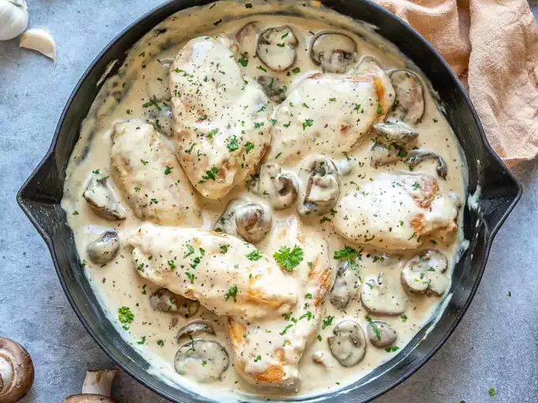

Chicken with Artichokes and Mushrooms

Description
Indulge in the rich and savory flavors of this Chicken with Artichokes and Mushrooms recipe. Tender chicken breasts are cooked to perfection and simmered in a luscious sauce made with artichoke hearts, mushrooms, and aromatic herbs. This dish is a delightful combination of tender chicken, earthy mushrooms, and the unique tang of artichokes, making it a perfect choice for a special dinner or a weekend treat.
Ingredients
- 4 Skinless, Boneless Chicken Breast Halves
- Salt and Pepper to Taste
- 1 Tbsp Olive Oil
- 1 Tbsp Butter
- 1 (14 Ounce) Can Marinated Artichoke Hearts, Quartered, Drained, Liquid Reserved
- 1 Cup Sliced Mushrooms
- 1 Cup White Wine
- 1 Tbsp Capers
Steps
- Season chicken with salt and pepper. Heat oil and butter in a large skillet over medium heat. Brown chicken in oil and butter for 5 to 7 minutes per side; remove from skillet, and set aside.
- Place artichoke hearts and mushrooms in the skillet, and saute until mushrooms are brown and tender. Return chicken to skillet, and pour in reserved artichoke liquid and wine. Reduce heat to low, and simmer for about 10 to 15 minutes, until chicken is no longer pink and juices run clear.
- Stir in capers, and simmer for another 5 minutes. Remove from heat; serve immediately.
Main Page
Original Recipe